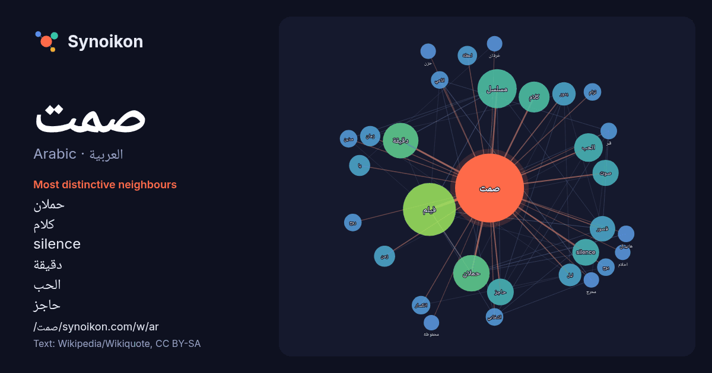

العربية · Arabic · word of the day list
صمت
“silence” · The words found around it in 858 instances from Arabic Wikipedia, Wikiquote.

Most distinctive neighbours
- حملان 40×
- كلام 22×
- silence 22×
- دقيقة 20×
- الحب 19×
- حاجز 19×
- مسلسل 19×
- قصور 16×
- فيلم 15×
- بدور 14×
- ليل 12×
- زمان 11×
- صوت 11×
- انكسار 11×
- لحظة 10×
- بوح 10.0×
- يا 9.5×
- تزام 9.3×
- انتخابي 9.3×
- اذاعي 9.2×
× = how many times more often than in general Arabic Wikipedia text.
Most frequent neighbours
- فيلم 82
- مسلسل 45
- حملان 39
- دقيقة 37
- كلام 28
- الحب 24
- silence 21
- حاجز 21
- صوت 20
- قصور 19
- بدور 16
- عالم 15
- ليل 15
- زمن 13
- مدينة 13
- يا 13
- الله 12
- رواية 12
- زمان 12
- عبد 11
In context
- صمت الحملان The Silence of the Lambs (الإنجليزية) الشعار تعديل - تعديل مصدري - تعديل ويكي بيانات صمت الحملان (الإنجليزية: The Silence of the Lambs) هو Wikipedia snippets · صمت الحملان (فلم)
- الصمت هو الغياب الكلي أو النسبي للصوت المسموع. تعدّ البيئة بمستوى صوت أقل من 20 ديسيبل صامتة. الأمثلة الآتية تعطينا فكرة عن مقياس الديسيبل، وهي أمثلة Wikipedia snippets · صمت
- دقيقة صمت مسلسل تلفزيوني سوري درامي. تنطلق حكاية المسلسل من شخصيتين هما أمير ناصر، وأدهم منصور، يحكم عليهما بالإعدام، وفي ساعات الفجر الأولى من أحد الأيام، Wikipedia snippets · دقيقة صمت (مسلسل)
- زمان الصمت أغنية للفنان طلال مداح من كلمات الشاعر الأمير بدر بن عبد المحسن، وألحان طلال مداح. وترحل .. صرختي .. تذبل في وادي لا صدى يوصل .. ولا باقي أنين Wikipedia snippets · زمان الصمت
- يا صمت هو أول ألبوم غنائي للمغني السوري ناصيف زيتون صدر الألبوم في أكتوبر 2013 من إنتاج شركة ميوزك أيز ماي لايف وتضمن الألبوم 12 أغنية باللغة العربية Wikipedia snippets · يا صمت
- صمت Silence (الإنجليزية) الشعار تعديل - تعديل مصدري - تعديل ويكي بيانات صمت هو فيلم ملحمي من إخراج مارتن سكورسيزي صدر عام 2016. مأخوذ عن رواية يابانية Wikipedia snippets · صمت (فلم)
- صمت الحملان تعديل - تعديل مصدري - تعديل ويكي بيانات صمت الحملان (الإنجليزية: The Silence of the Lambs) هي رواية رعب نفسي وإثارة جنائية صدرت عام 1988 للكاتب Wikipedia snippets · صمت الحملان (رواية)
- مشروع الصمت 탈출: PROJECT SILENCE (الكورية) تعديل - تعديل مصدري - تعديل ويكي بيانات مشروع الصمت هو فيلم إثارة وكوارث كوري جنوبي تم إنتاجه عام 2023، شارك Wikipedia snippets · مشروع الصمت (فلم)
More Arabic words
- أغنية
- إله
- تاريخ
- جبل
- جرس
- جزيرة
- جسر
- حديقة
- حصان
- حقيقة
- حياة
- خبز
- خريطة
- خريف
- ذهب
- زمن
- ساعة
- شاي
- شتاء
- صحة
- صحراء
- صيف
- طبيعة
- طريق
- طعام
- ظل
- عائلة
- عاصفة
- عسل
- علم
- عمل
- غابة
- فن
- قطار
- قطة
- قلب
- قوة
- كلب
- لغة
- ماء
- مال
- مدينة
- مرآة
- مطر
- ملح
- مناخ
- موت
- نجم
- والدة
Precomputed on 2026-10-09 with default settings (±5 words, medium corpus). The interactive map can refresh it with live data.